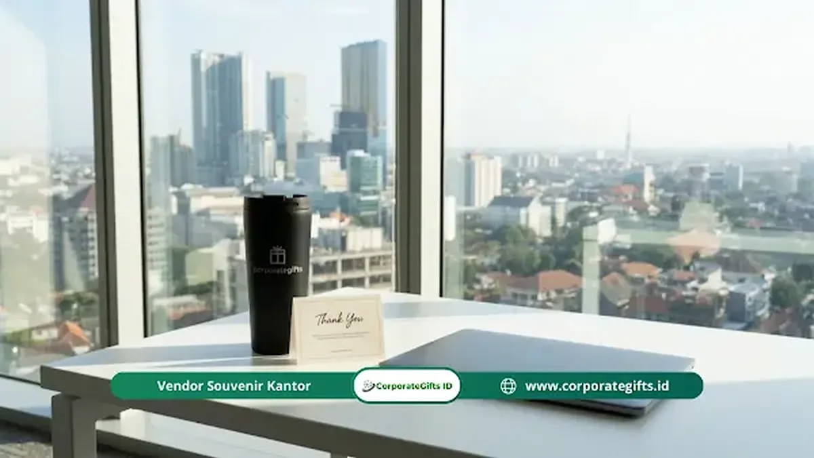

Corporate Gifts ID - Program recognition karyawan tersedia dalam berbagai bentuk, mulai dari penghargaan formal tahunan hingga apresiasi informal sehari-hari, dan setiap jenis memiliki peran dan dampak yang berbeda terhadap motivasi tim.
- Recognition formal cocok untuk merayakan pencapaian besar dan terukur
- Recognition informal efektif untuk membangun budaya apresiasi berkelanjutan
- Peer-to-peer recognition meningkatkan rasa kebersamaan dan kolaborasi tim
- Milestone recognition memperkuat loyalitas karyawan jangka panjang
- Kombinasi beberapa jenis recognition menghasilkan dampak paling maksimal
Apa Saja Jenis Program Recognition Karyawan?
Program recognition karyawan mencakup setidaknya lima jenis utama yang dapat dikombinasikan sesuai kebutuhan dan budaya organisasi.
Memahami perbedaan setiap jenis membantu organisasi memilih pendekatan yang paling tepat, efisien, dan bermakna bagi karyawan.
Menurut laporan SHRM tahun 2023, organisasi yang menggunakan lebih dari satu jenis recognition melaporkan tingkat keterlibatan karyawan 40% lebih tinggi dibandingkan yang hanya mengandalkan satu format tunggal.
Recognition Formal: Pengakuan Terstruktur dan Berjadwal
Recognition formal adalah pengakuan yang direncanakan, berjadwal, dan biasanya melibatkan seleksi atau nominasi resmi dalam siklus waktu tertentu.
Contoh recognition formal mencakup:
- Penghargaan Karyawan Terbaik Bulan Ini (Employee of the Month)
- Employee of the Year Award
- Penghargaan berbasis pencapaian target proyek khusus
- Sertifikat dan plakat penghargaan custom yang diserahkan dalam acara resmi tahunan perusahaan
Recognition formal paling efektif ketika kriteria seleksinya transparan, proses nominasinya terbuka, dan penyerahannya dilakukan dengan cara yang merayakan penerima di hadapan rekan-rekan mereka.
Kekurangannya adalah frekuensinya yang rendah, sehingga tidak cukup jika berdiri sendiri untuk membangun budaya apresiasi sehari-hari.
Recognition Informal: Apresiasi Spontan Sehari-hari
Recognition informal adalah pengakuan yang diberikan secara spontan, tanpa prosedur birokrasi yang rumit, sebagai respons langsung terhadap kontribusi atau perilaku positif karyawan.
Bentuk recognition informal yang umum:
- Ucapan terima kasih langsung dari manajer atau rekan kerja
- Pesan apresiasi melalui platform komunikasi tim seperti Slack atau Microsoft Teams
- Pujian tulus dalam rapat tim mingguan atau briefing harian
- Catatan tertulis personal bersama bingkisan kecil fungsional seperti tumbler custom atau merchandise meja kerja
Recognition informal tidak memerlukan anggaran besar, tetapi memerlukan komitmen kepemimpinan dan kebiasaan yang dibangun secara konsisten dari atas ke bawah.
Karyawan yang menerima pengakuan informal secara rutin cenderung lebih terlibat, bersemangat, dan lebih produktif dalam pekerjaan harian mereka.
Peer-to-Peer Recognition: Pengakuan dari Sesama Rekan
Peer-to-peer recognition adalah sistem di mana karyawan dapat memberikan pengakuan langsung kepada sesama rekan kerja tanpa harus menunggu arahan manajer atau tim HR.
Jenis recognition ini memiliki keunikan tersendiri karena pengakuan datang dari orang yang benar-benar memahami konteks, beban kerja, dan tantangan teknis sehari-hari secara langsung.
Sistem peer-to-peer recognition umumnya difasilitasi melalui platform digital atau papan apresiasi kantor yang memungkinkan karyawan saling memberikan poin reward, lencana apresiasi, atau pesan terima kasih.
Manfaat utama peer-to-peer recognition:
- Meningkatkan rasa kebersamaan, saling percaya, dan kolaborasi lintas divisi
- Memperluas jangkauan recognition melampaui kapasitas pengawasan manajer
- Menciptakan budaya saling menghargai yang organik dan inklusif
- Memberikan data tentang kontributor tersembunyi (unsung heroes) yang sering tidak terlihat oleh manajemen senior

Tumbler corporate gifts apresiasi informal karyawan kantor
Milestone Recognition: Pengakuan atas Loyalitas dan Perjalanan Karier
Milestone recognition adalah pengakuan yang diberikan pada momen-momen penting dalam perjalanan karyawan bersama organisasi, seperti peringatan masa kerja (years of service) atau pencapaian target jangka panjang.
Contoh milestone yang umum dirayakan:
- Ulang tahun masa kerja tahun ke-1, ke-5, ke-10, ke-15, dan seterusnya dengan paket gift set hampers eksekutif
- Penyelesaian program sertifikasi profesional atau pelatihan tingkat lanjut
- Promosi jenjang karier dan pengangkatan posisi baru
- Pelepasan masa purna tugas (pensiun) dengan cinderamata kenang-kenangan eksklusif
Milestone recognition sangat efektif untuk memperkuat loyalitas jangka panjang dan mengingatkan seluruh tim bahwa dedikasi serta loyalitas mereka terhadap perusahaan dihargai secara terhormat.
Bagaimana Memilih Jenis Recognition yang Tepat?
Pilihan jenis recognition yang tepat bergantung pada tujuan strategis organisasi, ukuran tim kerja, ketersediaan anggaran, dan preferensi demografis karyawan.
Panduan praktis memilih jenis recognition:
- Gunakan recognition formal untuk merayakan pencapaian besar yang terukur dan memerlukan panggung apresiasi publik.
- Gunakan recognition informal untuk membangun kebiasaan saling mengapresiasi setiap hari di seluruh tingkatan tim.
- Gunakan peer-to-peer recognition untuk memperkuat solidaritas tim dan mendeteksi kontributor penting yang luput dari pantauan pimpinan.
- Gunakan milestone recognition untuk memperkuat ikatan emosional dan menghargai loyalitas masa kerja karyawan.
Organisasi yang paling berhasil umumnya menggabungkan minimal tiga jenis recognition secara terpadu untuk memastikan seluruh spektrum motivasi karyawan terpenuhi secara seimbang.
Pertanyaan Seputar Jenis Program Recognition Karyawan (FAQ)
Kesimpulan
Setiap jenis program recognition memiliki kekuatan dan konteks penggunaan yang berbeda. Recognition formal memberikan validasi publik untuk pencapaian besar. Recognition informal membangun budaya apresiasi harian.
Peer-to-peer recognition memperkuat kolaborasi dan kebersamaan tim, sedangkan milestone recognition menghargai loyalitas jangka panjang. Strategi terbaik adalah mengombinasikan beberapa jenis recognition yang selaras dengan nilai dan budaya organisasi Anda.
Disclaimer: Informasi ragam format program recognition dalam artikel ini disusun berdasarkan studi manajemen sumber daya manusia terapan dan praktik pengadaan corporate gifting di Indonesia.